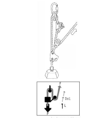
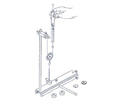

| Objetivo: |
| Determinar si con la polea móvil se tiene un ahorro de fuerza.
|
|
| Introducción: |
Ver Figura 1.
Las poleas móviles tienen movimiento de traslación y la carga se reparte por igual sobre los segmentos de la cuerda, por lo que el
esfuerzo se reduce (se multiplica la fuerza).
F=P/2
Atendiendo a la fórmula del trabajo mecánico, para un trabajo determinado al reducir la fuerza ejercida, se incrementará la
distancia del recorrido. Por otro lado para elevar una carga se debe hacer fuerza en sentido ascendente (más incómodo y poco
efectivo). |
|
|
| Desarrollo Experimental: |
|
Preparación:
Montaje de acuerdo con la Figura 2.
Insertamos una varilla de soporte 25 cm. a través de la perforación transversal del riel de soporte.
Ajustamos la varilla de soporte con ayuda del tornillo moleteado.
Colocamos los capuchones de plástico a ambos extremos de la varilla de soporte.
Fijamos la varilla de soporte 50 cm. normal al riel de soporte y sobre el mismo. Fijamos la nuez a la varilla de soporte normal.
Fijamos el bulon de cojinetes a la nuez.
Atamos gazas a ambos extremos de un cordón de unos 30 cm. de longitud.
Enganchamos una gaza al bulón de cojinetes.
Enganchamos el dinamómetro 2 N a la otra gaza.
Enganchamos la polea con el estribo a la gaza de tal manera que estribo de la polea se encuentre hacia abajo.
Ajustamos el punto cero del dinamómetro mientras éste se encuentre hacia abajo.
Ajustamos el punto cero del dinamómetro mientras éste se encuentra enganchado a la polea (de esta manera taramos el peso
propio de la polea).
Experimento 1:
Preparamos sucesivamente con los platillos y los pesos de ranura cargas de 60g, 120g y 180g respectivamente.-
Sucesivamente estas cargas de la corcheta del estribo de la poela.
Leemos en el dinamómetro la fuerza de tracción necesaria.-
Trasladamos los valores a la tabla 1.
Experimento 2:
Retiramos el cordón del bulón de cojinetes y deslizamos la nuez con el bulón de cojinetes hacia el extremo superior de la varilla de soporte.
Ahora suspendemos un segundo dinamómetro 2 N del bulón de cojinetes.
Ajustamos el punto cero del dinamómetro.
Enganchamos el cordón por una de las gazas al dinamómetro, enganchamos el otro dinamómetro del otro extremo del cordón y
enganchamos la polea al cordón. El dinamómetro en el bulón de cojinetes mide la carga que debe soportar la suspensión. Nos
aseguramos de que la suspensión soporte constantemente el resto de la carga. |
| Resultados y Conclusiones: |
Experimento 1:
La fuerza de tracción es constantemente solo la mitad de la carga ¿Ha desaparecido una parte de ka fuerza del peso?.
Conclusión: con la polea móvil logramos un ahorro de fuerza. La fuerza necesaria es la mitad de carga.
|
|
|
| Figura 1: Introducción |
|  |
| |
| Figura 2: Montaje |
|  |
|